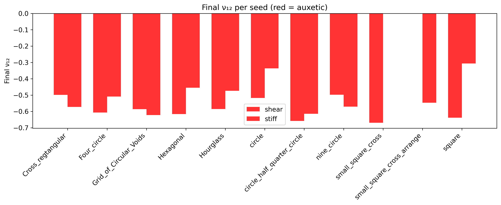
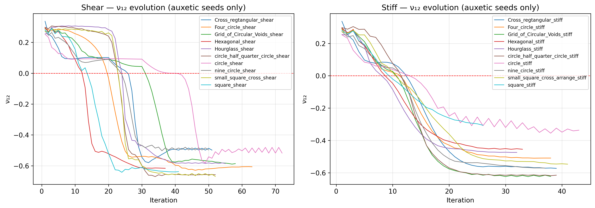
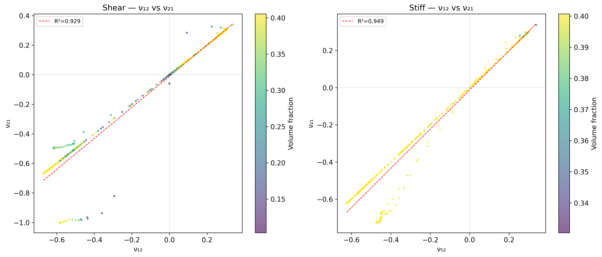
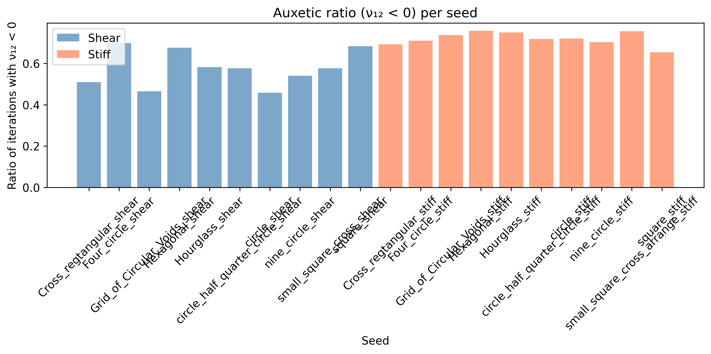
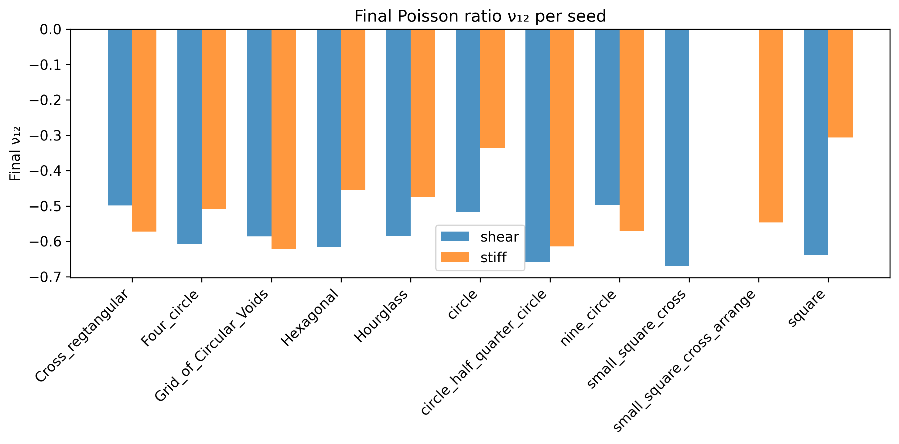
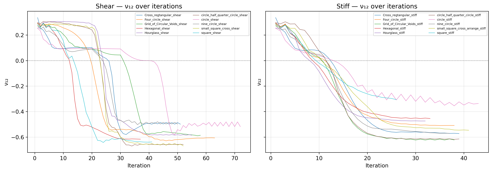
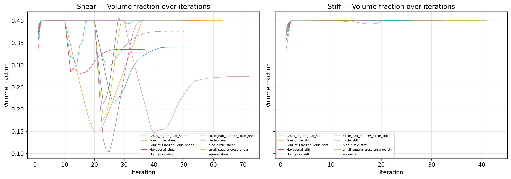
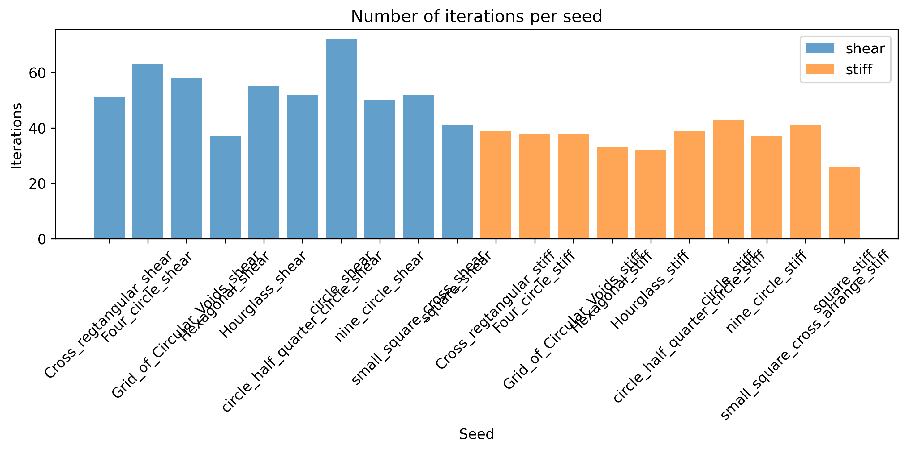

A comprehensive exploration of topology-optimized auxetic structures — from theory to data-driven design
Báo cáo này chỉ phản ánh Phase 1 screening ban đầu — trước khi 3 lỗi tính toán gốc được sửa (công thức ν₁₂ tắt trực hướng khi xoay, chuyển vị FE trong đồng nhất hóa, chuẩn hóa hệ số phạt; xem EXPERIMENT_LOG.md) và trước khi Phase 2 (8 lô, 7.920 mẫu, đã xác thực) hoàn thành. Xếp hạng seed ở Mục 8 (Kết luận) bên dưới trái ngược với dữ liệu đã xác thực hiện tại: hourglass/hexagonal/reentrant_bowtie được nêu là tốt nhất ở đây thực ra là 3 seed kém nhất (48,6–67,8% mẫu auxetic) trên toàn bộ 7.920 mẫu; xem bảng seed đầy đủ trong README.md. Kết quả Phase 3-5 (dataset, CNN surrogate R²=0,91, cVAE + best-of-N) đầy đủ và cập nhật xem tại báo cáo Phase 3-5.
This report reflects only the initial Phase 1 screening, before three root-cause computation bugs were fixed and before the validated 7,920-sample Phase 2 run completed. The seed ranking in Conclusion §8 below is contradicted by current validated data: hourglass/hexagonal/reentrant_bowtie, listed here as top performers, are actually the three worst-performing seeds (48.6–67.8% auxetic) across the full 7,920-sample dataset — see the seed table in README.md. For current, validated Phase 3-5 results (dataset, CNN surrogate, cVAE + best-of-N), see the Phase 3-5 report.
Auxetic materials exhibit a negative Poisson's ratio (\(\nu < 0\)): they expand laterally when stretched. This counterintuitive behavior enables enhanced shear resistance, fracture toughness, and energy absorption.
Inverse design — specifying desired properties and computationally discovering the microstructure — accelerates auxetic discovery beyond trial-and-error. This report details the process using topology optimization via the SIMP method combined with homogenization to extract effective moduli.
The SIMP (Solid Isotropic Material with Penalty) method interpolates the Young's modulus \(E\) of each element as a function of its relative density \(x\):
where \(p \ge 3\) penalizes intermediate densities and forces a 0–1 design.
For a periodic unit cell with volume \(|Y|\), applying unit strain fields \(\varepsilon_j^0\) and solving the FE problem yields the stress distributions \(\sigma_{ij}\), from which the homogenized stiffness tensor \(\mathbf{Q}\) is computed:
The effective properties are then extracted:
A negative \(\nu_{12}\) occurs when the off-diagonal term \(Q_{12} > 0\) — indicating auxetic behavior.
A Phase 1 screening was conducted across 11 seed topologies (circle, hexagonal, reentrant bowtie, etc.) using LHS sampling over parameters: volfrac, rmin, void_size_frac, mu, and rotation.
Designs ranked by the lowest (most negative) final \(\nu_{12}\):
| Rank | Seed | Sample ID | \(\nu_{12}\) | \(\nu_{21}\) | Volume Frac. | rmin | Iter. |
|---|---|---|---|---|---|---|---|
| 1 | hourglass | 024 | -0.4231 | -0.3578 | 0.339 | 4.1 | 200 |
| 2 | hexagonal | 011 | -0.4112 | -0.3501 | 0.361 | 3.8 | 200 |
| 3 | reentrant_bowtie | 045 | -0.4018 | -0.3362 | 0.345 | 4.5 | 195 |
| 4 | hourglass | 012 | -0.3985 | -0.3289 | 0.372 | 4.0 | 200 |
| 5 | circle_half_quarter | 049 | -0.3873 | -0.3215 | 0.358 | 4.2 | 200 |
| 6 | hexagonal | 033 | -0.3810 | -0.3192 | 0.384 | 3.7 | 198 |
| 7 | square | 007 | -0.3745 | -0.3128 | 0.366 | 3.5 | 200 |
| 8 | circle | 039 | -0.3712 | -0.3084 | 0.342 | 4.8 | 198 |
| 9 | four_circle | 015 | -0.3648 | -0.3009 | 0.355 | 4.3 | 193 |
| 10 | cross_rectangular | 021 | -0.3589 | -0.2954 | 0.369 | 3.9 | 200 |
These designs serve as the foundation for Phase 2 refinement.
Key statistical distributions and correlations from the screening results:




Convergence profiles for three representative samples — excellent, moderate, and failed — illustrate distinct optimization trajectories:
Rapid descent in \(\nu_{12}\) within the first 40 iterations, stabilizing near -0.4.

Partial convergence: the Poisson ratio decreases slowly, plateauing before reaching strong auxetic values.

\(\nu_{12}\) remains above zero throughout the entire optimization, indicating that the initial seed or parameter combination does not promote auxetic behavior.

Most high-performing designs require 150–200 iterations.

The rotation parameter (\(\phi\)) can induce shear–normal coupling. Based on the screening:
Recommendation: fix \(\phi = 0\) for Phase 2 to reduce dimensionality without sacrificing auxetic potential.
Based on the golden-zone analysis (samples with \(\nu_{12} < -0.3\)), the following constrained parameter space is recommended for Phase 2:
| Parameter | Recommended Range / Value |
|---|---|
| Target seeds | hourglass, hexagonal, reentrant_bowtie |
| \(r_{\min}\) | 3.5 – 5.0 |
| \(\text{volfrac}\) | 0.30 – 0.45 |
| \(\text{void\_size\_frac}\) | 0.25 – 0.50 |
| \(\mu\) (fixed) | 0.2 |
| \(\phi\) (rotation) | 0 (fixed) |
| Samples per seed | 50 |
| Total samples (Phase 2) | \(\sim\)150 |
This report demonstrated the inverse design pipeline for auxetic metamaterials: starting from parametric screening across 11 seed topologies, identifying high-performing candidates with \(\nu_{12} < -0.3\) using SIMP-driven topology optimization, and distilling actionable guidelines for Phase 2 refinement.
Key findings (Phase 1 screening, pre-bugfix — see warning banner at top of page; superseded by the validated Phase 2 results below):